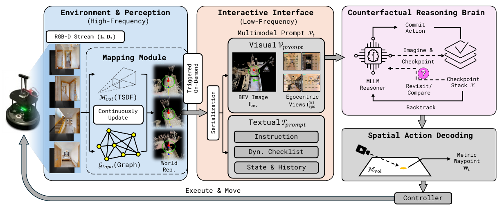
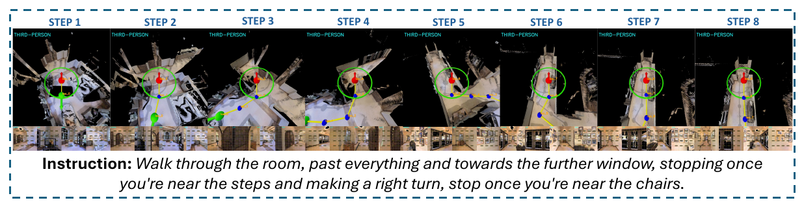
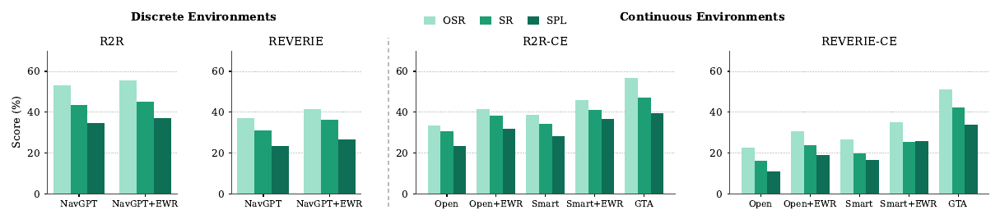
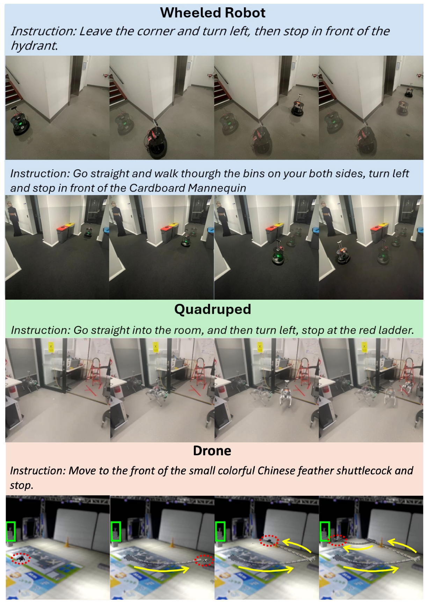

A navigable agent must understand both high-level semantic instructions and precise spatial structure. Multimodal large language models, with their strong generalization, are a promising foundation for such agents, but relying on egocentric RGB alone forces them to infer global layout implicitly and hallucinate it.
We propose a decoupled design that separates low-level spatial state estimation from high-level semantic planning. Unlike prior methods that rely on predefined, oversimplified textual maps, GTA introduces an explicit metric world representation that maintains rich and consistent information, allowing the MLLM to query and reason over it for decision-making. We further introduce counterfactual reasoning to elicit the MLLM's capacity, while the world representation ensures the physical validity of the produced actions. Across simulated and real-world environments, GTA establishes a new zero-shot state of the art, reaching 48.8% success on R2R-CE and 46.2% on RxR-CE, and transfers without modification to a wheeled robot, a quadruped, and a drone.
A frozen MLLM cannot operate on a 3D map directly. GTA splits the problem into three parts: a mapping module that builds the world representation at high frequency, an interface that serializes it into a multimodal prompt on demand, and a reasoning loop that treats navigation as a search over branches rather than a single greedy step.

Depth is fused into a TSDF whose zero-level set is the scene surface; the visited trajectory is kept as a topological graph with per-node visit counts. The MLLM sees both as images, and queries them at every decision instead of reading a passive text summary. Egocentric views carry appearance for open-vocabulary grounding; the map view carries metric structure for precise coordinates.
The MLLM selects a view and a pixel. That pixel is ray-cast against the TSDF to obtain a metric waypoint, so any visible surface point is a valid target. No learned waypoint predictor is needed, which is what lets the same system transfer across simulators, environments, and robot bodies.
At a branch point the MLLM writes down what it expects to see along each direction and pushes a checkpoint. When a later observation contradicts the stored expectation, the agent returns to the checkpoint, blocks the failed direction, and re-decides over the remaining ones. In our ablation this expectation check is the single largest contributor to success rate.

Zero-shot VLN-CE methods report on different episode subsets. The table below re-evaluates GTA under the exact protocol of the strongest prior method for each setting, and additionally reruns STRIDER with our GPT-5.1 backbone on the same 100 episodes.
| Protocol | Strongest prior | SR / SPL | GTA SR / SPL |
|---|---|---|---|
| R2R-CE, 100 episodes released by Open-Nav | STRIDER | 35.0 / 30.3 | 47.0 / 38.8 |
| same episodes, STRIDER rerun with GPT-5.1 | STRIDER | 40.0 / 36.5 | 47.0 / 38.8 |
| R2R-CE, full val-unseen (1,839) | BZS-VLN | 41.0 / 25.4 | 48.8 / 41.8 |
| RxR-CE, 300 English episodes | BZS-VLN | 35.7 / 21.7 | 46.0 / 37.9 |
Each variant adds one mechanism on top of the previous one, on the 100-episode set, so adjacent rows isolate its contribution.
| Variant | SR | SPL | nDTW |
|---|---|---|---|
| Greedy, no backtracking | 31.0 | 27.1 | 34.7 |
| + loop detection and backtracking | 37.0 | 31.8 | 45.6 |
| + checkpoint memory, without expectations | 39.0 | 35.3 | 49.3 |
| + expectation checking (full GTA) | 47.0 | 38.8 | 53.6 |
Backtracking is triggered in 63% of episodes; 38.1% of episodes that backtrack at least once still succeed.

The same framework, with no platform-specific tuning, drives three physical embodiments in unseen real-world environments: a TurtleBot 4 wheeled base, a Unitree Go2 quadruped, and a custom quadrotor. The visual domain gap that cripples end-to-end methods (VLN-BERT 16%, RDP 20%) barely affects GTA, because its decisions are anchored on the synthesized map rather than on raw appearance.

Everything needed to re-run the protocol-matched comparisons and ablations is in the repository, including the exact episode lists and the verbatim prompts for every ablation condition.
data/episodes/r2r_ce_opennav_100.json100 R2R-CE episodes released by Open-Nav, used verbatimdata/episodes/rxr_ce_en_260_seed1024.jsonScene-stratified English RxR-CE sample reported in the paperdata/episodes/rxr_ce_en_300.jsonUniform random English RxR-CE sample matching the BZS-VLN protocolscripts/sample_rxr.pySampling script that regenerates both RxR-CE lists from the seedsprompts/Full prompt template, plus the w/o-PB and component-ablation variants@inproceedings{li2026gta,
title = {One Agent to Guide Them All: Empowering {MLLMs} for Vision-and-Language Navigation via Explicit World Representation},
author = {Li, Zerui and Zheng, Hongpei and Zhao, Fangguo and Shao, Yanyan and Zhou, Jian and Lin, Sihao and Li, Shijie and Wu, Qi},
booktitle = {Conference on Robot Learning (CoRL)},
year = {2026}
}